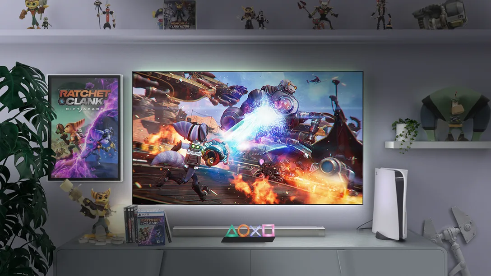
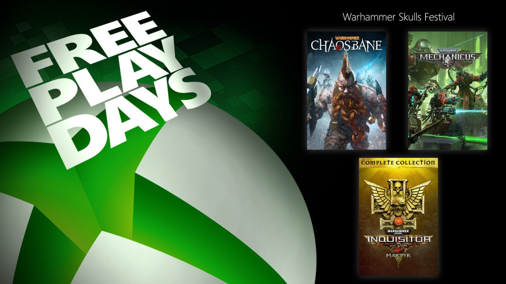
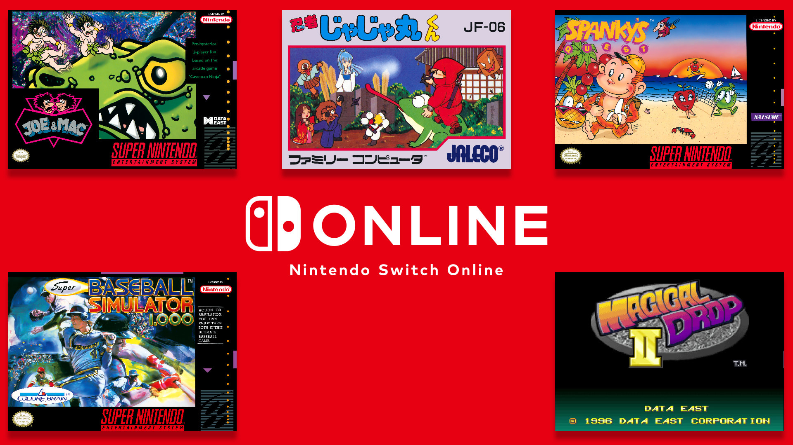
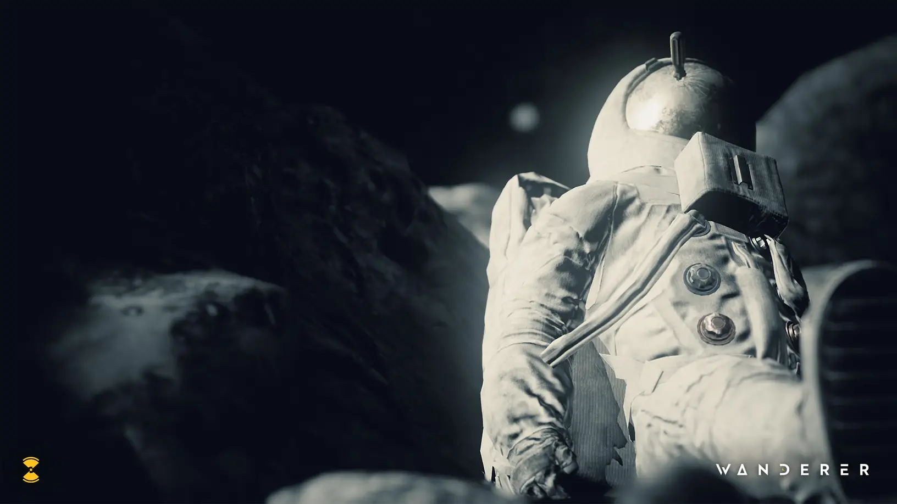
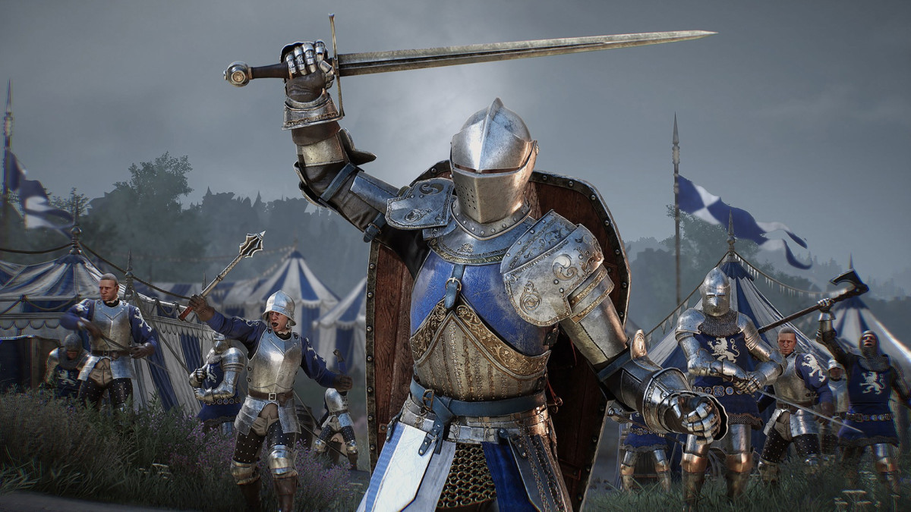
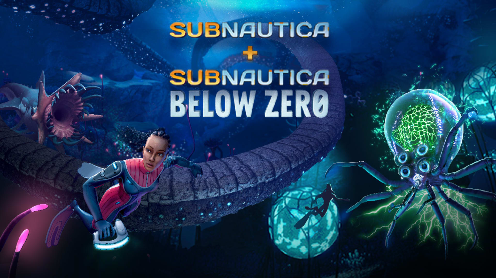
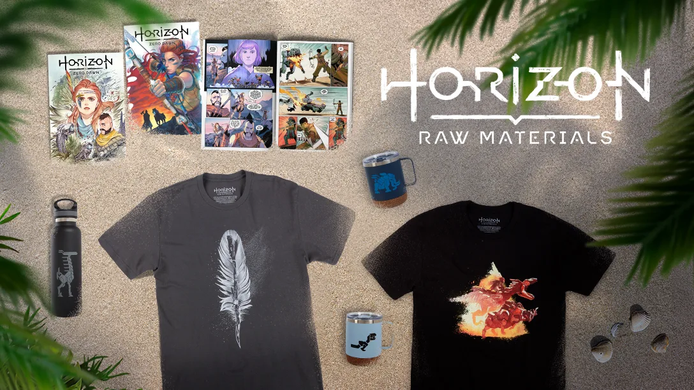
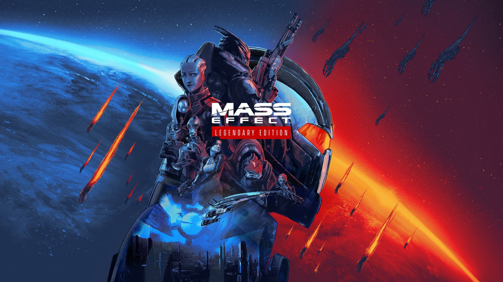
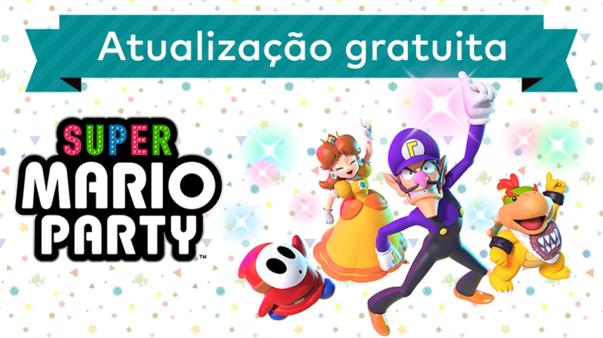

Home
Plataforma
MOBA
RPG de Ação
Estratégia
Saiba Mais
Notícias relaciadas ao mundo dos jogos

Comemorando a evolução de Ratchet & Clank no PlayStation

Dias para Jogar de Graça – Warhammer 40K: Inquisitor – Martyr, Warhammer: Chaosbane e Warhammer 40K: Mechanicus

A coletânea de clássicos chega a mais de 100 jogos para os assinantes do Nintendo Switch Online! Veja o que foi adicionado recentemente

Jogue como um viajante relutante com a tarefa de reescrever os eventos do passado e remodelar o futuro, chegando ao PS VR.

Próxima semana no Xbox: 7 a 11 de junho

Mergulhe em duas aventuras submarinas com Subnautica e Subnautica: Below Zero.

Mercadoria da New Horizon Raw Materials: Gear Store e quadrinhos

Cinco coisas que você precisa saber antes de jogar Mass Effect Legendary Edition

Atualização gratuita para Super Mario Party! Partidas online chegam ao modo de jogo de tabuleiro.